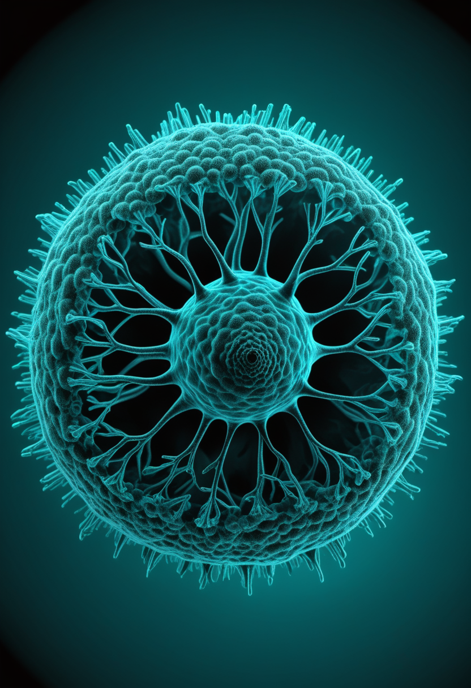
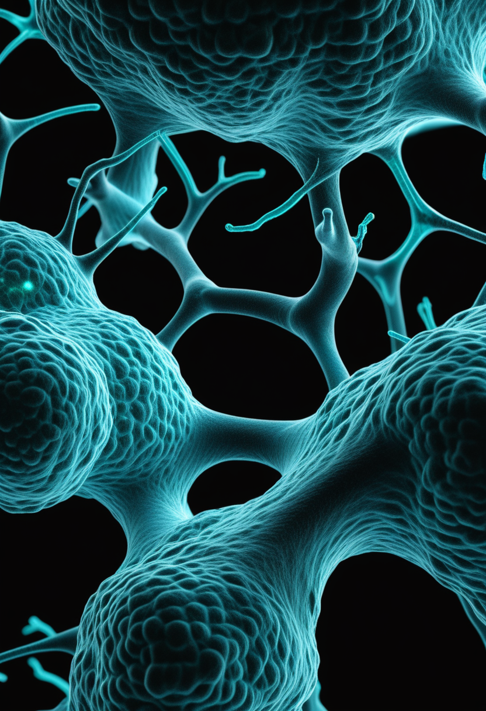
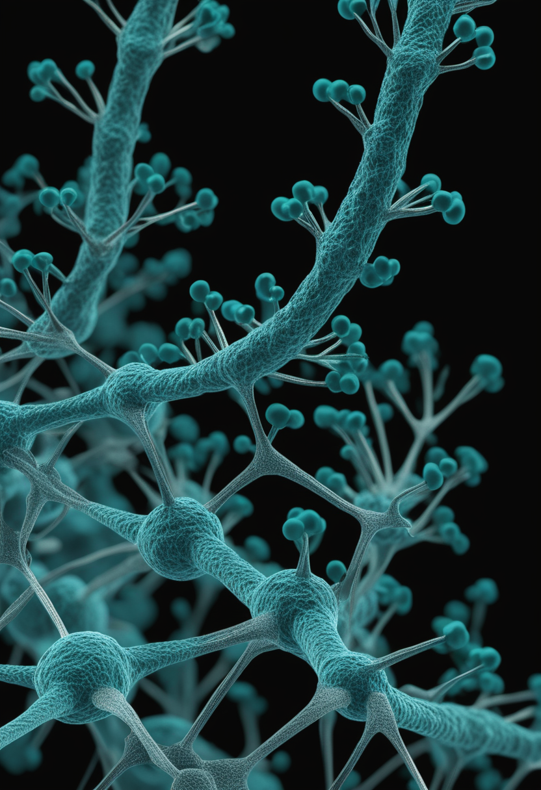
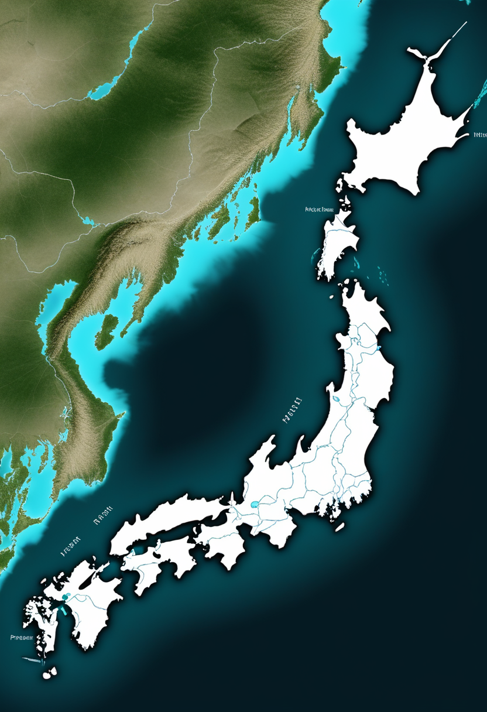
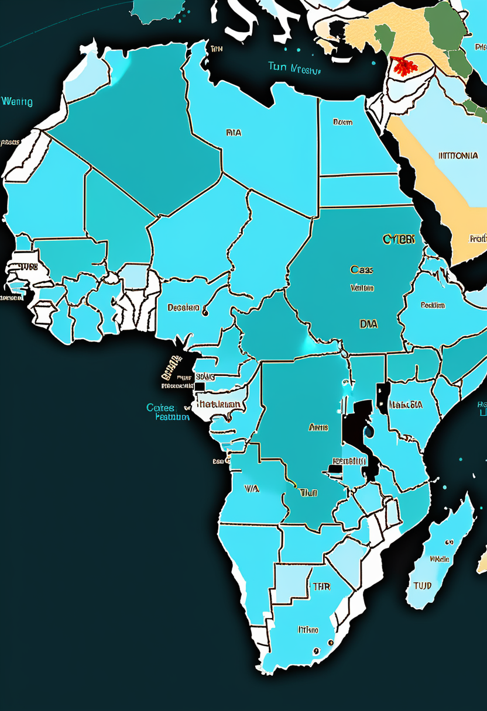
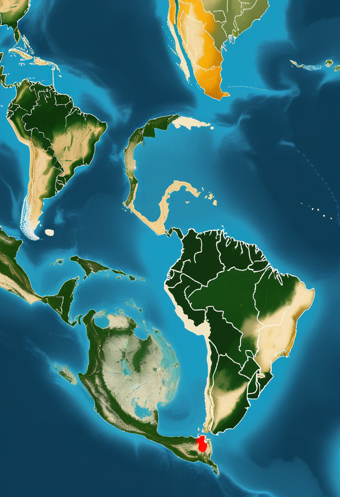
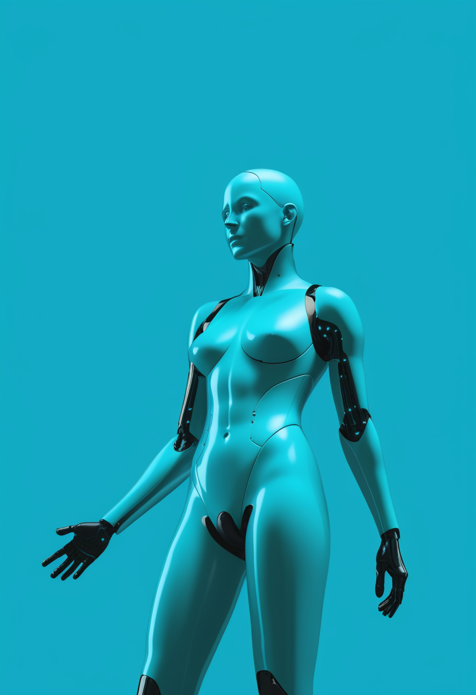

土曜日の便り。DRCエボラ（ブンディブギョ型）が6月15〜17日更新で確定837例・196死者に達し、Africa CDCが「2014-16年西アフリカを超える可能性」を初公式表明した。有効ワクチン・治療薬のないまま週50件超ペースが続くPHEICの今日、Quantinuumが98量子ビット「Helios」の高忠実度検証を公表し、ESA Euclidは6月24日の第2次データ公開で暗黒宇宙地図を更新しようとしている。視線×BCI研究がETRA 2026で集結し、「Digital Me」と題されたLLM×個人デジタルツイン論文が個人の会話スタイルを複製できると問い、Science誌が「AI意識の倫理的空白は今すぐ埋めるべき」と警告する。アピテグロマブは9月30日のFDA審査を待ち、日本の新生児スクリーニングが全国化に向けて動き続けている。問いながら世界は前進する、土曜日。

WHOとECDCが6月15〜17日に更新したデータによれば、DRCのエボラ出血熱（ブンディブギョ型）は確定例837件・死者196人（致死率約23%）に達した。イツリ州だけで767例を占め、北キブ州67例・南キブ州3例が続く。Africa CDCは「2014-16年西アフリカ流行（死者11,000超）を超える可能性がある」と6月16日、初めて公式に警告を発した。PHEICは5月16日宣言後も週50件超のペースは変わっていない。最大の問題はブンディブギョウイルス型に対する承認済みワクチン・治療薬が存在しない点で、rVSV-ZEBOVワクチン（エルベボ）はこの型には有効でない。武装勢力の活動するイツリ州で医療チームの現地アクセスが制限されており、封じ込めには構造的困難が立ちはだかる。

Scholar RockのBLAをFDAが受理し、審査完了期限（PDUFA）は2026年9月30日に設定された。SAPPHIRE第3相試験でnusinersen・risdiplam併用比較において運動機能の統計的有意な改善を示したアピテグロマブは、「神経を守るSMN標的」から「筋肉を取り戻す筋シグナル標的」へのパラダイムシフトを体現する薬剤だ。EMAでも並行審査中で2026年中盤（7月前後）に承認判断が見込まれる。Fill-Finish施設（Catalent Indiana／Novo Nordisk）の製造是正対応の進捗がBLAの最終ゲートとなる。
BiogenのSalanersen（BIIB115）が2026年初頭にFDA「画期的療法指定（BTD）」を取得した。注目点は「遺伝子治療（オナセムノゲン等）を受けた後も残存症状を持つ患者への追加治療」として開発されている点で、SMN非依存のアプローチで既存三大療法との差別化を図る。遺伝子治療後にも進行しうる筋力低下に対応する第二の手として、Phase 2試験の準備が進行中だ。画期的療法指定による審査加速が期待されており、SMA治療の選択肢がさらに広がる可能性がある。

2026年1月、日本マススクリーニング学会がSMA新生児スクリーニングの治療・フォローアップ指針を更新した（手引きは2025年12月版）。神奈川県・横浜市・川崎市・相模原市が2024年10月より公費負担スクリーニングを開始しており、先行事例として全国展開の参照モデルになっている。無症状段階での早期投与が予後を大幅に改善するエビデンスは確立しており、アピテグロマブ9月審査や高用量Spinraza承認とも相まって「早く見つけて早く治療する」体制の整備が政策課題として浮上している。
アピテグロマブ9月PDUFA確定・EMA中盤審査、Salanseren遺伝子治療後対応のBTD取得、日本ガイドライン更新と先行公費化の輪 ── SMAの「早く・深く・次の一手」は今週も前進している。
2025年12月末にElon Muskが予告した計画が2026年に進行中だ。Telepathデバイスの高量産化と、R1ロボットによる手術のほぼ完全自動化が具体化しつつある。特に注目される技術的変更は「電極スレッドが硬膜を切除せずに貫通可能になる」点で、開頭手術で硬膜を大きく開く必要がなくなり手術リスクと回復期間が短縮される。N1チップ（運動・感覚野）とBlindsite（視覚野）の二製品を並行展開するなかで、手術の自動化と低侵襲化は量産BCIへの現実的ルートとして業界の評価を受けている。
ACM「Eye Tracking Research and Applications（ETRA 2026）」がモロッコ・マラケシュで6月1〜4日に開催された。眼球運動データ解析、視線ベースのALS患者向けコミュニケーション装置、Dwell入力（視距離適応型）など多岐にわたる研究が発表された。視線入力とBCIの統合が重症神経疾患患者の意思伝達を変えつつあることが確認され、ALS末期まで自発的眼球運動が保たれることを利用した視線AAC多モーダル研究が活発化している。
Cambridge Core掲載のWearable Technologies誌論文は、視線追跡と精神ワークロードの同時計測データを組み合わせてアシスティブデバイスのリアルタイム制御精度を向上させる手法を報告した。複数の身体障害を持つユーザーで検証され、視線入力の「誤操作」問題を設計段階から軽減する知見を提供している。ユーザーが「見たくてカーソルが動く」過感度型誤作動と「集中しているが視線がぶれる」認知負荷起因の誤作動を区別して対処する点が新しい。
Neuralinkが高量産・硬膜切除不要の自動化手術体制に進み、ETRA 2026で視線×BCI多モーダル研究が成果を共有し、精神ワークロードと視線の同時計測が誤作動を設計から削る ── BCIが量産・学術・使い勝手の三軸で同時に前進している。

WHOおよびECDCの6月15〜17日更新によれば、DRCエボラ（ブンディブギョ型）の確定例は837件・死者196人（致死率約23%）、376人が隔離施設入院中。イツリ州が20保健区に767例を占め最多、北キブ州67例・南キブ州3例が続く。Africa CDCは6月16日、「2014-16年西アフリカ流行（死者11,000超）を超える可能性」を初めて公式表明した。これはアフリカの疾病監視機関が初めて「史上最悪」の可能性を公に認めた宣言であり、国際的対応強化への号令となる。PHEICは5月16日宣言後も週50件超ペースが続いている。
今回の流行が特に深刻な理由はブンディブギョウイルス（BDBV）型にある。既承認のrVSV-ZEBOVワクチン（エルベボ）はこの型には有効でなく、承認済み特異的治療薬も存在しない。BDBVの前回大規模流行は2007年のみで封じ込め実績が乏しい。イツリ州では武装勢力の活動が医療チームの現地活動を制限しており、接触追跡率が50%以下とされる。WHOはPHEICを「パンデミック緊急事態」には格上げしていないが、週ペースが変わらなければ再評価の可能性がある。国際的な支援（米国2億2,000万ドル・EU等）が続くが、ワクチンなしの封じ込めは接触追跡・隔離・教育の三本柱に依存する。

エボラとは別に、二つの大規模感染症がアフリカ・アジアで進行している。マダガスカルでは2025年12月〜2026年6月9日の累計でmpox確定例2,000件・死者7人。スリランカでは2026年年初〜6月15日時点でデング熱が41,000例超に達し、毎年雨期に拡大するパターンが今年も継続。WHO主催の「世界デングデー」は6月15日に実施された。エボラ対応に国際リソースが集中するなか、これらの感染症による命の損失が国際報道の陰で続いている。
Africa CDCが「史上最悪の恐れ」を初公式表明しブンディブギョ型の承認ワクチン・治療薬ゼロの現実が問われ、マダガスカルmpoxとスリランカデングが並走する ── 今週の基盤は感染症の重なりが構造的に続いている。
ESAユークリッド宇宙望遠鏡の第2次データ公開（Q2）が6月24日（火）に予定されている。今回の焦点は「Euclid Galactic Bulge Survey（EGBS）」で、天の川銀河中心部（バルジ）の高精度赤外・可視マッピングを提供する。次の主要コスモロジーデータリリースは2026年10月予定で、暗黒エネルギー・暗黒物質の宇宙論的解析が本格化する。Q2は広域宇宙観測から「銀河の中心」という特異環境に踏み込む観測で、星形成・恒星集団・重力レンズ効果の同時研究が可能になる。
2026年6月18日、Sandia国立研究所とQuantinuumが共同でHelios（98量子ビット、イオントラップ型）の高精度性能検証を公表した。単量子ビットゲートと2量子ビットゲートで高忠実度・高SPAM精度を達成しており、「誤り訂正量子コンピュータへの現実的ルート」として業界の注目を集めている。2026年はUNESCO・CERNが定める「量子科学技術国際年（IYQ）」で、Nature誌の「2026年注目技術7選」にも量子コンピュータが選ばれており、Heliosの検証成果は論理量子ビットによる実用的計算への橋渡しステップと位置付けられる。
6月18日のAAS248会議でNASA主催「ASTRAイニシアティブ」セッションが開催され、次世代宇宙天文学の戦略的ロードマップが議論された。6月21〜26日にはメリーランド州でLISAシンポジウムが開催予定で、宇宙重力波観測機LISA（打ち上げ目標2035年）の科学目標・技術要件が集中討議される。ESA PLATOは2026年12月打ち上げ予定で最終準備段階にある。2030年代以降の天文学を定義する三大プロジェクト（LISA・PLATO・Roman）の準備が同時に進んでいる。
Euclid Q2が6月24日に銀河バルジの暗黒宇宙地図を更新し、Helios 98量子ビット検証が誤り訂正量子コンピュータへの道を開き、LISA・PLATO・RomanがシンポジウムとKSCで2030年代天文学を準備している ── 今週の畏敬は観測・計算・計画の三軸で宇宙への手が伸びている。
2026年6月に投稿されたarXiv論文（2506.23826）は、LLMと動的に更新される個人データを組み合わせたHuman Digital Twin（HDT）アーキテクチャを提案する。「神経可塑性にインスパイアされた記憶統合」と「適応学習機構」により、対話相手に応じた会話スタイルの再現と個人の経験・意見の動的回答付与を実現するという。産業用データモデルとしてのデジタルツインから「本人そのもの」の会話複製へのパラダイムシフトを示し、プライバシー・同意・なりすましリスクという倫理課題も同時に提起している。

Science誌掲載論文（doi:10.1126/science.adn4935）は、現在のAIシステムが現象的意識を持つ科学的根拠はないと結論しつつ、「統合された因果構造・身体化・主観的視点の欠如」を指摘する。研究者らはAIと神経技術の進化が意識研究を追い越しているとして倫理・法制度の先行整備を「緊急課題」と訴える。2026年時点の法律はAI安全・プライバシー・バイアス対策に集中し、潜在的意識AIへの権利保護は制度的空白のままだ。「わたしとは何か」という問いを機械に向けた時代に、その問いに答える制度は追いついていない。
NCT06861283「X Town Stage I」は医療デジタルツイン活用型の臨床研究プラットフォームで、個人の生理データを連続的にミラーリングし治療効果の予測・シミュレーションを行うシステムを検証中だ。「Digital Twin Smart Educational Platform for Visually Impaired」（NCT07641127）も視覚障害者向けリハビリ・教育への応用を並行して試験している。「Digital Me」論文が理論を描き、Science誌が警告を発する同じ週に、医療現場ではデジタルツインの臨床実装がすでに動き始めている。
「Digital Me」論文がLLM×HDTで個人の会話複製を示し、Science誌が意識AIの倫理的空白を緊急課題と警告し、臨床デジタルツインが検証段階で動き始めた ── 今週の美は「デジタルの自分」という問いが技術・倫理・医療の三方向から同時に問われている。
今日の世界は、Africa CDCが「史上最悪の恐れ」と初公式警告を発した土曜日だった。ブンディブギョ型エボラに承認ワクチンがないまま週50件超のペースが続くDRCの今と、マダガスカルmpox・スリランカデングが並走する複合感染症の今が、国際的な緊張感として伝わってくる。アピテグロマブは9月30日のFDA審査を待ち、Salanseren が遺伝子治療後の次の手として画期的療法指定を受け、日本の新生児スクリーニングが全国化へと歩み続けている。NeuralinkがBlindsite・自動化手術・量産体制で「BCIの民主化」に踏み込み、ETRA 2026で視線×BCI研究が成果を分かち合った。Helios 98量子ビットが検証され、Euclidが6月24日に銀河バルジを映し出す準備をし、LISA・PLATOが2030年代天文学を設計している。
土曜日の便り。問いながら世界は前進する。おやすみなさい。